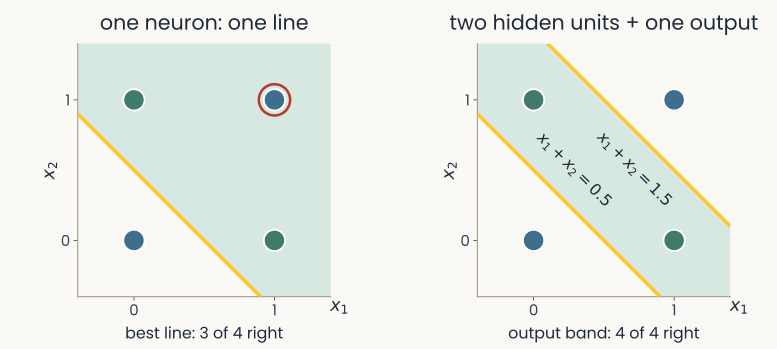

Backpropagation & training in practice
Reader-friendly version of the 31 lecture slides: the lecture content in normal flow, with figure descriptions and data tables where the figure carries data. Open the presentation.
Slide 1

Backpropagation & training in practice
Slide 2
What if no line separates the classes?
Slide 3
Past the XOR wall: stack neurons into layers

Two panels with the four XOR points, blue at (0,0) and (1,1), green at (0,1) and (1,0). Left, one neuron, one line: the best single line gets 3 of the 4 right and one point is circled as wrong. Right, two hidden units, then one output: two lines, x1 + x2 = 0.5 and x1 + x2 = 1.5, bound a band that is the output's green region, and all 4 points are right
Open full-size figure
- One neuron draws one line: at best 3 of the 4 XOR points (left). The perceptron never reaches zero mistakes on XOR
- With two hidden units (neurons between the input and the output), the output can fire in the band between two lines and get all 4 (right). Stacked neurons draw boundaries that one line cannot
Slide 4
The network that solves XOR

A 2-2-1 network drawn left to right, the same drawing as the backpropagation slides that follow. Inputs x1 and x2; magenta weights of 1 from each input to each of the two hidden units; green bias labels b = 0 on hidden unit 1 and b = minus 1 on hidden unit 2; weights 1 and minus 2 from the hidden units to the output y hat, which fires if above 0.5
Open full-size figure- is the output of unit in layer . Hidden unit 1 acts like OR (on when any input is on): . Unit 2: . Which function? (minute paper)
- The output fires if : OR but not unit 2, so XOR. Can a network learn these weights?
Slide 5
The hidden layer re-represents the input
The XOR network of the previous slide: inputs x1 and x2, weights of 1 into both ReLU hidden units, biases 0 and minus 1, output weights 1 and minus 2, output fires if above 0.5
Open full-size figure- Plotted by the two hidden outputs (right), (0,1) and (1,0) land on the same point: one line separates the classes
- The hidden layer turns XOR into a linearly separable problem for the readout

The four XOR inputs in hidden-unit coordinates a1 and a2 of layer 1: blue (0,0) at the origin, green (0,1) and (1,0) together at (1,0), blue (1,1) at (2,1). One solid gold line separates the green point, on the shaded side, from the two blue points. The caption reads: in the hidden layer, one line suffices
Open full-size figureSlide 6
How can a hidden unit learn when nothing tells it what to output?
Slide 7
Backpropagation: a long and disputed history
- 1969: Minsky & Papert (1969) show that a perceptron cannot compute XOR. No widely known method trains hidden layers, and interest in neural networks fades
- 1970–1974: Linnainmaa, studying rounding errors in computer programs, computes all the derivatives of a long calculation in one backward sweep. Werbos derives it for general models in 1974 and applies it to neural networks in 1982
- 1986: Rumelhart et al. (1986) show that hidden units trained this way learn useful internal representations. Their Nature paper made backprop the standard method
- Who deserves the credit is still argued. Hinton's 2024 Nobel Prize in Physics, shared with Hopfield, cited a different kind of network, the Boltzmann machine, not backprop. His 2018 Turing Award, shared with Bengio and LeCun, was for deep learning as a whole
Slide 8
The credit-assignment problem

A 2-2-1 network drawn left to right. Inputs x1 = 1 and x2 = 0; six magenta weights; two hidden units marked with red question marks and the words target?; an output unit at 0.54; a box on the right reading target y = 1
Open full-size figure- Same 2-2-1 layout, now with small weights of both signs, biases 0 (not drawn), and a sigmoid output: is the predicted probability that XOR = 1. Target 1, loss 0.61 (computed on the forward-pass slide). Which weights should change?
- A hidden unit has no target: what should have been? This is credit assignment
Slide 9
How should each weight change?
- Compare the output with its target. With the cross-entropy loss, the error at the output is . Negative: the output should go up
- The goal: change the weights a little, so that next time the output lands closer to its target
- For each weight, ask: if it grew slightly, would the loss of this example go up or down, and how fast? That slope is the gradient. Step against it:
- A weight into the output gets the output error directly. A hidden unit acts only through the units it feeds; its error is the output error sent back along that connection, times the connection's weight (and 0 if the unit was off)
- The math behind it is the chain rule of calculus (the slope of a function of a function is the product of the slopes). Not derived in class (see the backpropagation notes). The next slides run it with numbers
- Activity flows forward to the output. Error flows backward to every weight
Slide 11
Step 1: the forward pass

The same network after the forward pass. The box on the right now reads target y = 1, loss 0.61, and underneath, equals minus log y hat
Open full-size figure- Run the input through and keep every weighted sum and output for the backward pass
- Hidden: , ; . Output: , (: sigmoid)
- Its loss, the cross-entropy:
Slide 12
Step 2: the error at the output

The same network. A green arrow runs back from the loss box to the output unit, and a green tag under the output reads delta = minus 0.46
Open full-size figure- Sigmoid + cross-entropy: error = prediction − target:
- Negative: the output was too low and should rise. Every later step builds on this output error
Slide 13
Step 3: send the error backward

The same network. Green arrows run back from the output to each hidden unit, labelled times 0.70 and times minus 0.60. Green tags read delta 1 = minus 0.32 next to a1 of layer 1 and delta 2 = 0.27 next to a2 of layer 1
Open full-size figure- A hidden unit's error = output error × the weight linking them × its ReLU slope (1 if its weighted sum was positive, else 0)
- ;
- Each hidden unit gets its own error, even its own sign: should have been higher, lower
Slide 14
Step 4: every gradient is error × activity

The same network with the weights replaced by their gradients in green: minus 0.32 and 0.27 on the connections from x1, 0 on both connections from x2, minus 0.23 and minus 0.14 on the connections into the output. The error tags stay in place
Open full-size figure- gradient = error × activity:
- Green numbers: the six gradients. Weights from get 0 (). Each bias (input always 1) gets its unit's error:
- One step with on all six weights and three biases: rises from 0.54 to 0.82
Slide 15
Why it works: the chain rule, run backward

A chain of five boxes, w11 of layer 1, z1 of layer 1, a1 of layer 1, z of layer 2, and the loss ℓ, joined by arrows. Above each arrow its local derivative: x1, g prime, w1 of layer 2, and y hat minus y; below each arrow its value: 1, 1, 0.70, and minus 0.46. Underneath: d ℓ by d w11 of layer 1 equals minus 0.46 times 0.70 times 1 times 1 equals minus 0.32, multiply from the loss backward
Open full-size figure- The loss depends on the weight (from to ) through a chain: . The chain rule multiplies the local slopes along it, as steps 2 to 4 did
- Backprop is the chain rule of multivariable calculus, applied layer by layer. You will not be asked to derive it. If you have taken multivariable calculus, the derivation is in the backpropagation notes
Slide 16
Try it: train a small network on 2-D data
- Compare one and two hidden units on XOR: does training separate the classes? Every weight is learned by the same four steps
Slide 17
From one output to one output per class

Two panels stacked. Top, two classes: inputs x1 to xD, each with its weight, summed into z, passed through a sigmoid to give one probability p-hat (logistic regression). Bottom, K classes: the same inputs feed three output neurons, each with its own weight vector w1, w2, w3, giving logits z1 to z3; a softmax turns them into three probabilities p-hat 1 to 3 that sum to 1 (softmax regression)
Open full-size figure- The XOR network had one output; reading out the 51 objects of the IT recordings needs more. inputs; two classes: one neuron and a sigmoid, as in logistic regression
- classes: neurons reading the same inputs, each with its own weights , one weighted sum per class (the logits)
- The softmax turns the logits into probabilities that add up to 1
Slide 18
Many classes: softmax and cross-entropy
- One weighted sum per class , the logits . The softmax turns them into probabilities; the loss: −log of the true class's probability
- Example: logits give . True class 1: . True class 3:
- Right and confident, ; wrong and confident, grows without bound

Two bar charts joined by an arrow labelled softmax. Left: logits 2, 1 and 0 for classes 1, 2 and 3. Right: probabilities 0.67, 0.24 and 0.09, which add up to 1
Open full-size figureSlide 19
PyTorch: a neuron in a few lines
import torch
import torch.nn as nn
neuron = nn.Linear(in_features=3, out_features=1) # weight shape (out, in) = (1, 3)
x = torch.tensor([[0.5, -1.0, 2.0]]) # one example, 3 features
a = torch.relu(neuron(x)) # a = ReLU(w^T x + b)
print(neuron.weight.shape, a) # torch.Size([1, 3]) ...
nn.Linear(in, out)stores the weights with shape(number of outputs, number of inputs): one row per neuron
The recitation on PyTorch went through this code line by line.
Slide 20
One training step, and one epoch

A cycle of five numbered steps. 1, clear the old gradients. 2, forward: a batch of examples goes through the model and gives outputs. 3, loss: the outputs are compared with the labels, giving one number L. 4, backward: the gradient of L for every weight. 5, step: each weight moves against its gradient, scaled by the learning rate. An arrow labelled next batch returns to step 1. One epoch is every batch of the training set once. An inset shows L falling over epochs
Open full-size figure- One step: a batch (a set of examples processed together) forward, one number ℒ (their average loss), its gradient for every weight, then every weight moves a little
- One epoch: every example in the training set once. Training repeats epochs while ℒ falls
Slide 21
The training loop
model = nn.Linear(D, K) # D inputs, one logit for each of K classes
loss_fn = nn.CrossEntropyLoss() # softmax + cross-entropy, averaged
opt = torch.optim.SGD(model.parameters(), lr=0.1) # SGD: a plain gradient step
for epoch in range(num_epochs): # one epoch = one pass over the training set
opt.zero_grad() # 1. clear the old gradients
logits = model(X_train) # 2. forward: logits for every image
loss = loss_fn(logits, y_train) # 3. the average cross-entropy
loss.backward() # 4. gradient of the loss for every weight
opt.step() # 5. update: w <- w - lr * gradient
with torch.no_grad(): # evaluate on held-out images
acc = (model(X_test).argmax(1) == y_test).float().mean()
- This model is a linear readout. To train a hidden layer, change only the
modelline backward()computes the gradients.opt, the optimizer, turns them into weight changes instep()- This is the delta rule's loop, written for a whole layer: forward, loss, gradient, step, repeat
Slide 22
Autograd: you never write the backward pass

The worked example as PyTorch records it: x, a weighted sum with W1, z1, ReLU, a1, a weighted sum with W2, z2, and a sigmoid-plus-loss box giving ℓ. Forward values in blue above each quantity, gradients in green below; a long green arrow runs right to left, labelled loss.backward, one reverse sweep, the chain rule at each step. W1 and W2 carry their .grad values
Open full-size figure- PyTorch's automatic differentiation (autograd) records the forward pass as a computational graph: the operations that ran, and the values each one used
loss.backward()sweeps the graph in reverse: output error, hidden errors, then each parameter's gradient, stored in its.grad.opt.step()applies the update
Slide 23
Train only part of a network
model = nn.Sequential(nn.Linear(D, 64), nn.ReLU(), nn.Linear(64, K))
model.load_state_dict(torch.load("trained.pt")) # weights trained earlier
for p in model[0].parameters(): # the hidden layer
p.requires_grad = False # no gradients: these weights stay fixed
opt = torch.optim.Adam(model[2].parameters(), lr=1e-3) # Adam: an optimizer, defined later
- To freeze a trained layer, turn off its gradients and give the optimizer only the weights that should learn
- Readout only: cheap. It tells you what a trained readout can find in the hidden layer's responses, which stay fixed
- Every weight: backpropagation also changes the hidden layer, so its responses to the images change too
- Same data, same loss: only the set of weights allowed to move differs
Slide 24
How do you train on a million images without one giant step?
Slide 25
Minibatches: a gradient from a few examples at a time
- Full batch: the gradient over all training examples at every step. Exact, but slow for large
- Minibatch: shuffle the data, then take one step per batch of examples (often 32 to 256). One step is also called an iteration; an epoch now holds many steps
- Each minibatch gradient is a noisy estimate of the full one. It is much cheaper, and the noise can help the weights escape shallow dips in the loss
- With this is the original stochastic gradient descent (the SGD of the training-loop code)

Twelve numbered training examples in order, then the same twelve shuffled, then cut into three batches of four; each batch is one step, and the three steps make one epoch; the next epoch shuffles again
Open full-size figureSlide 26
Shrink the step: learning-rate schedules

Two stacked panels. Top: the learning rate against step for four schedules: constant, step decay that halves it at fixed intervals, 1 over 1 plus t over tau, and cosine decay. Bottom: the training loss for each; the shrinking schedules settle lower and more smoothly than the constant one
Open full-size figure- With noisy minibatch gradients, a constant step keeps bouncing. Too large overshoots, too small crawls
- A schedule lowers during training: large steps early, small steps late. Top: the step sizes. Bottom: the losses; dashed, the lowest loss these data allow
- Step decay halves at fixed intervals (here every 200 steps). Cosine lowers it smoothly to near 0. shrinks it a little at every step ; sets how soon the shrinking starts
- In the last-200-steps inset, the shrinking schedules fluctuate less
Slide 27
Adam: the most popular optimizer
θ: all weights and biases · every operation is done one weight at a time · the small correction Adam applies in its first steps is omitted
- Momentum (): a running average of recent gradients. The noisy parts of successive minibatch gradients cancel; a consistent direction adds up
- A step size for each weight (): each weight's step is divided by the typical size of its own gradient. Weights with small gradients still move, and large gradients are scaled down
- and set how much of each running average is kept at every step. The defaults, and , work on most problems. , a tiny number, prevents division by zero
- Usually fewer steps to a low loss than plain gradient descent, but it still needs a learning rate
Slide 28
The learning rate, measured

Training loss on a log scale against epoch for four learning rates. At 10 to the minus 5 the loss stays flat near 2.3 (test accuracy 0.16); at 10 to the minus 3 it falls steadily to about 0.16 (test 0.96); at 10 to the minus 2 it falls fastest, below 0.01 (test 0.98); at 1 it stays flat near 2.3 (test 0.11)
Open full-size figure- Four runs of one network (64 ReLU hidden units) on handwritten digits, differing only in ; "test" = accuracy on held-out images
- Too large a step can switch a ReLU unit off on every input: a dead unit
- Too small: the loss barely moves. Too large: the loss sticks at chance (−log 1/10 ≈ 2.3 for ten digits), the units have died
- The range that works spans orders of magnitude, so sweep on a log scale, and sweep it first
Slide 29
Recap
- Hidden layers: one neuron draws one line. Two ReLU hidden units re-represent the XOR inputs so that one line separates the classes
- Backpropagation: forward pass, error at the output (), error sent backward through the weights, and every gradient is error × activity. Autograd runs these steps for you
- The training loop: a softmax readout for many classes, then forward, loss,
backward(),step(), repeated over epochs. Freezing a trained layer trains only the readout - Step sizes: minibatches, a learning rate that shrinks, and Adam. Sweep on a log scale first
Slide 30
Further reading for the research trail
Optional: a few research-trail entries over the semester. Any paper mentioned in any lecture qualifies, but papers from this block are preferred.
- Crick Nature 1989: why backprop, as written, is unlikely to be how the brain learns
- Lillicrap et al. Nat Rev Neurosci 2020: how a brain could approximate the error signal of step 3 without copying the weights backward
- Kingma & Ba ICLR 2015: Adam, the optimizer most networks are trained with
Slide 31
Minute paper
Submit on Canvas → Minute papers → Minute Paper 10 (access code read out in class).
Write three brief points in your own words:
- In the network that solves XOR, which logical function does hidden unit 2 compute?
- Something you do not yet understand, or a question still open
- Another idea you found interesting, and why it matters for brains, behavior or AI
Credit for a thoughtful attempt, not for being correct.